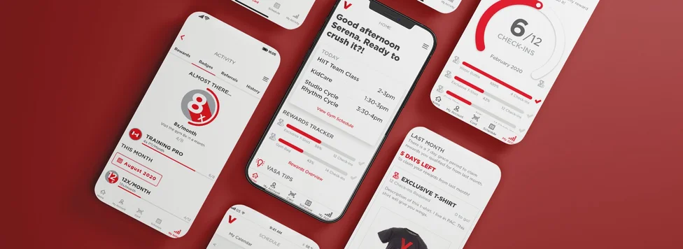

Case studies
End-to-end UX concept for training custom LLMs on phone call data — from automated topic discovery through model validation. A self-service redesign that exposed the invisible human infrastructure propping up a powerful product.
Enter Password to View →

Redesigned the core workflows agents and supervisors rely on daily — from call handling to coaching and performance management — contributing to millions in ARR growth.
Enter Password to View →
Project lead for UX on a supply chain risk platform during a period of hypergrowth that culminated in a $1B+ valuation — designing the dashboards enterprises used to detect and respond to supplier threats in real time.
View case study →
Took a national gym chain's fragmented member experience — scattered across booking, check-in, and account management — and designed a single mobile app that brought it all together for millions of users.
View case study →